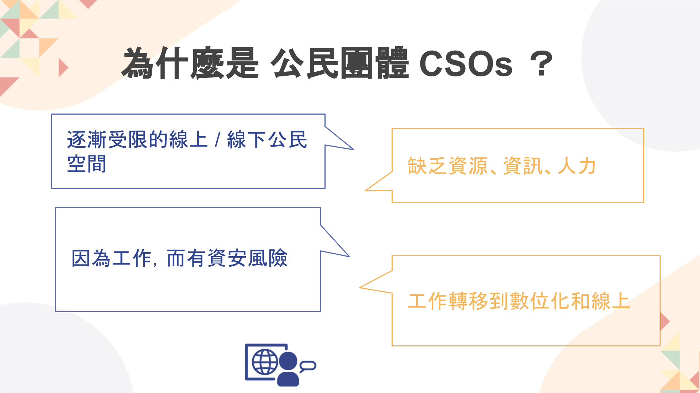
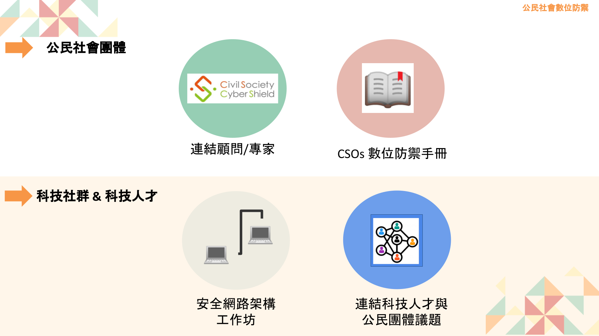

在後疫情時代，網路的影響力顯著地成長。除了過去的交流資訊、購物等等，遠端工作及雲端服務也漸漸成為主流。OCF 長期關注數位人權及網路自由，為了催生更健全的數位社會，我們積極扮演提升意識及提供工具的角色。OCF 從實務角度出發，除了產出用開源服務來進行數位防禦的指南手冊之外，更積極地透過培訓、串連，邀請科技社群及技術人員加入支持公民社會的行列，從了解議題、認識公民社會的數位威脅，進而吸引科技相關技術人員加入數位人權的工作和奉獻行列。希望藉由公民社會培力、串連、科技人才培訓來達成 OCF 扮演科技與公民跨界的橋樑。

隨著幾乎所有工作都要上網的時代到來，世界上的公民團體也越來越習慣利用數位工具進行倡議。舉凡日常的行政運作、內外人員的往來溝通、勸募、記者會或宣傳，都需要使用到網路設備。然而，我們的數位生活也已經成為駭客的攻擊目標，尤其是由極權國家資助的駭客，更容易針對公民團體，進行竊取或監控的數位攻擊。
對尋常使用者而言，不注重數位安全可能導致重要資訊外洩、或是電腦被植入惡意軟體來監控，例如金融帳號或是公司的業務機密。但對於關注人權的公民團體而言，無論是行政專員的工作檔案、捐款人的資訊，或是正在聯繫政治犯的身份與管道，都極可能在外洩後對倡議進程帶來重大危害。
其實，大多數位攻擊經常是針對使用者日常生活使用網路行為，例如使用瀏覽器、輸入帳號密碼就是每天上網都會發生，但不一定會隨時保持良好習慣的環節。或是公民團體的組織工作者會需要使用雲端硬碟分享資訊、架設網站進行宣傳與溝通，也常會因為只求方便、或缺乏相關專業知識的參考管道，憑藉個人習慣操作數位工具，而在無形中提供駭客可以攻擊的漏洞。
要支持一個公民組織，需要的不只是一個單位協力，更是需要多方資源和技術專家結合來持續性地回應公民社會的多項資訊安全需求，以長期的支撐公民組織們要執行的人權及民主工作使命。然而，台灣跨領域的交流不多，認識公民社會樣態及議題的科技背景人才寥寥無幾；另一方面，實際在公民社會組織中工作的人，他們也對於科技相關議題和知能缺乏。而實地來看，台灣現今也缺乏讓科技人才與公民團體交流的契機。
在這個背景之下，至 2022 年起，OCF 開啟了公民社會數位防禦計畫。這個計畫主要的目的是知能培訓和跨領域串聯，具體我們的行動方針為以下四項：
